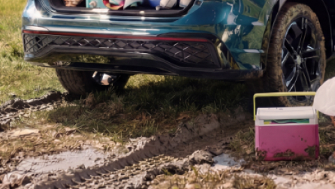
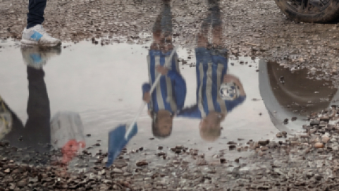
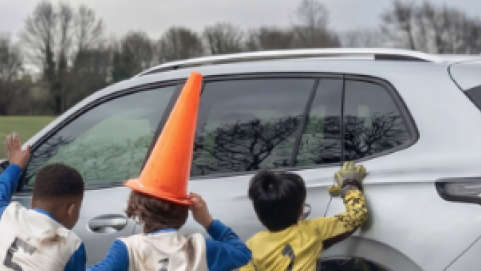

The challenge: Volkswagen wanted to capture 3x beautiful scenes - each with mini stories within them - in the grit of a UK winter with unpredictable weather and to a tight end of January delivery deadline.


The Fix: A hybrid AI workflow. We paired studio performances by photographer Sam Barker with a studio product shoot and a custom build AI-generated environment workflow - build bespoke for this production which was then handed over to retouching to increase efficiencies and reduce costs.
The Outcome: Three cinematic stills for Volkswagen that celebrate the life’s adventures as part of the 2026 Tiguan Campaign. Lovingly produced alongside Lee Bryan for a January 2026 launch.



Agency: adam&eveDDB
Creative: Ted Heath & Paul Angus
Photographer: Sam Barker
AI Prompting & Workflow: Richard Bailey
Retouching: John Webb & Andy Nutt
Producer: Lee Bryan
Account Team: Tejan Shan & Livia Von Tucher